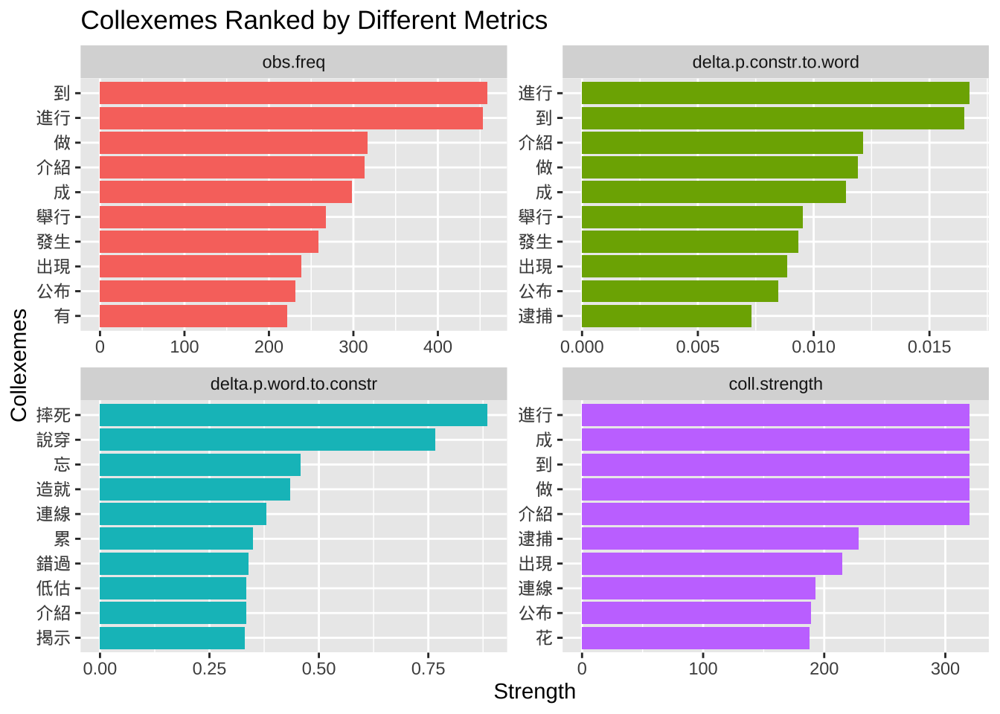

Chapter 8 Constructions and Idioms
library(tidyverse)
library(tidytext)
library(quanteda)
library(stringr)
library(jiebaR)
library(readtext)8.1 Collostruction
In this chapter, I would like to talk about the relationship between a construction and words. Words may co-occur to form collocation patterns. When words co-occur with a particular morphosyntactic pattern, they would form collostruction patterns.
Here I would like to introduce a widely-applied method for research on the meanings of constructional schemas—Collostructional Aanalysis (Stefanowitsch & Gries, 2003). This is the major framework in corpus linguistics for the study of the relationship between words and constructions.
The idea behind collostructional analysis is simple: the meaning of a morphosyntactic construction can be determined very often by its co-occurring words.
In particular, words that are strongly associated (i.e., co-occurring) with the construction are referred to as collexemes of the construction.
Collostructional Analysis is an umbrella term, which covers several sub-analyses for constructional semantics:
- collexeme analysis (cf. Stefanowitsch & Gries (2003))
- co-varying collexeme analysis (cf. Stefanowitsch & Gries (2005))
- distinctive collexeme analysis (cf. Gries & Stefanowitsch (2004))
This chapter will focus on the first one, collexeme analysis, whose principles can be extended to the other analyses.
Also, I will demonstrate how we can conduct a collexeme analysis by using the R script written by Stefan Gries (Collostructional Analysis).
8.2 Corpus
In this chapter, I will use the Apple News Corpus from Chapter 7 as our corpus. (It is available in: demo_data/applenews10000.tar.gz.)
And in this demonstration, I would like to look at a particular morphosyntactic frame in Chinese, X + 起來. Our goal is simple: in order to find out the semantics of this constructional schema, it would be very informative if we can find out which words tend to strongly occupy this X slot of the constructional schema.
That is, we are interested in the collexemes of the construction X + 起來 and their degree of semantic coherence.
So our first step is to load the text collections of Apple News into R and create a corpus object.
## Text normalization function
## Define a function
normalize_document <- function(texts) {
texts %>%
str_replace_all("\\p{C}", " ") %>% ## remove control chars
str_replace_all("\\s+", "\n") ## replace whitespaces with linebreak
}
## Load Data
apple_df <-
readtext("demo_data/applenews10000.tar.gz", encoding = "UTF-8") %>% ## loading data
filter(!str_detect(text, "^\\s*$")) %>% ## removing empty docs
mutate(doc_id = row_number()) ## create index## Example usage of `normalize_document()`
## before cleaning
apple_df$text[1][1] "《蘋果體育》即日起進行虛擬賭盤擂台，每名受邀參賽者進行勝負預測，每周結算在周二公布，累積勝率前3高參賽者可繼續參賽，單周勝率最高者，將加封「蘋果波神」頭銜。註:賭盤賠率如有變動，以台灣運彩為主。\n資料來源：NBA官網http://www.nba.com\n\n金塊(客) 103：92 76人騎士(主) 88：82 快艇活塞(客) 92：75 公牛勇士(客) 108：82 灰熊熱火(客) 103：82 灰狼籃網(客) 90：82 公鹿溜馬(客) 111：100 馬刺國王(客) 112：102 爵士小牛(客) 108：106 拓荒者\n\n"## after cleaning
normalize_document(apple_df$text[1])[1] "《蘋果體育》即日起進行虛擬賭盤擂台，每名受邀參賽者進行勝負預測，每周結算在周二公布，累積勝率前3高參賽者可繼續參賽，單周勝率最高者，將加封「蘋果波神」頭銜。註:賭盤賠率如有變動，以台灣運彩為主。\n資料來源：NBA官網http://www.nba.com\n金塊(客)\n103：92\n76人騎士(主)\n88：82\n快艇活塞(客)\n92：75\n公牛勇士(客)\n108：82\n灰熊熱火(客)\n103：82\n灰狼籃網(客)\n90：82\n公鹿溜馬(客)\n111：100\n馬刺國王(客)\n112：102\n爵士小牛(客)\n108：106\n拓荒者\n"## Apply cleaning to all docs
apple_df$text <- normalize_document(apple_df$text)Raw texts usually include a lot of noise. For example, texts may include invisible control characters, redundant white-spaces, and duplicate line breaks. These redundant characters may have an impact on the word segmentation performance. It is often suggested to clean up the raw texts before tokenization.
In the above example, I created a simple function, normalize_text(). You can always create a more sophisticated one that is designed for your own corpus data.
8.3 Word Segmentation
We use the self-defined word tokenization method based on jiebar. There are three important steps:
- We first initialize a
jiebarlanguage model usingworker(); - We then define a function
word_seg_text(), which enriches the raw texts with word boundaries and parts-of-speech tags; - Then we apply the function
word_seg_text()to the original texts and create a new column to our text-based data frame, a column with the enriched versions of the original texts.
This new column will serve as the basis for later construction extraction.
# Initialize jiebar
segmenter <- worker(user = "demo_data/dict-ch-user.txt",
bylines = F,
symbol = T)
# Define function
word_seg_text <- function(text, jiebar) {
segment(text, jiebar) %>% # word tokenize
str_c(collapse = " ") ## concatenate word tokens into long strings
}
# Apply the function
apple_df <- apple_df %>%
mutate(text_tag = map_chr(text, word_seg_text, segmenter))Our self-defined function word_seg_text() is a simple function to convert a Chinese raw text into am enriched version with word boundaries and POS tags.
word_seg_text(apple_df$text[1], segmenter)[1] "《 蘋果 體育 》 即日起 進行 虛擬 賭盤 擂台 ， 每名 受邀 參賽者 進行 勝負 預測 ， 每周 結算 在 周二 公布 ， 累積 勝率 前 3 高 參賽者 可 繼續 參賽 ， 單周 勝率 最高者 ， 將 加封 「 蘋果 波神 」 頭銜 。 註 : 賭盤 賠率 如有 變動 ， 以 台灣 運彩 為主 。 \n 資料 來源 ： NBA 官網 http : / / www . nba . com \n 金塊 ( 客 ) \n 103 ： 92 \n 76 人 騎士 ( 主 ) \n 88 ： 82 \n 快艇 活塞 ( 客 ) \n 92 ： 75 \n 公牛 勇士 ( 客 ) \n 108 ： 82 \n 灰熊 熱火 ( 客 ) \n 103 ： 82 \n 灰狼 籃網 ( 客 ) \n 90 ： 82 \n 公鹿 溜 馬 ( 客 ) \n 111 ： 100 \n 馬刺 國王 ( 客 ) \n 112 ： 102 \n 爵士 小牛 ( 客 ) \n 108 ： 106 \n 拓荒者 \n"Please note that in this example, we did not include the parts-of-speech tagging in order to keep this example as simple as possible. However, in real studies, we often need to rely on the POS tags if we want to improve the quality of the pattern retrieval.
Therefore, for your own project, probably you need to revise the word_seg_text() and also the jiebar language model (worker()) if you would like to include the POS tag annotation in the data processing.
8.4 Extract Constructions
With the word boundary information, we can now extract our target patterns from the corpus using regular expressions with unnest_tokens().
# Define regex
pattern_qilai <- "[^\\s]+\\s起來\\b"
# Extract patterns
apple_qilai <- apple_df %>%
select(-text) %>% ## dont need original texts
unnest_tokens(
output = construction, ## name for new unit
input = text_tag, ## name of old unit
token = function(x) ## unesting function
str_extract_all(x, pattern = pattern_qilai)
)
# Print
apple_qilai8.5 Distributional Information Needed for CA
To perform the collexeme analysis, which is essentially a statistical analysis of the association between words and a specific construction, we need to collect necessary distributional information of the words (X) and the construction (X + 起來).
In particular, to use Stefan Gries’ R script of Collostructional Analysis, we need the following information:
- Joint Frequencies of the words and the construction
- Frequencies of Words in Corpus
- Corpus Size (total number of words in corpus)
- Construction Size (total number of the construction tokens in corpus)
Take the word 使用 for example. We need the following distributional information:
- Joint Frequencies: the frequency of
使用＋起來 - The frequency of
使用in Corpus - Corpus Size (total number of words in corpus)
- Construction Size (total number of the construction tokens in corpus)
8.5.1 Word Frequency List
Let’s attend to the second distributional information needed for the analysis : the frequencies of words/collexemes.
It is easy to get the word frequencies of the entire corpus.
With the tokenized texts, we first convert the text-based data frame into a word-based one; then we create the word frequency list via simple data manipulation tricks.
## create word freq list
apple_word_freq <- apple_df %>%
select(-text) %>% ## dont need original raw texts
unnest_tokens( ## tokenization
word, ## new unit
text_tag, ## old unit
token = function(x) ## tokenization function
str_split(x, "\\s+")
) %>%
filter(nzchar(word)) %>% ## remove empty strings
count(word, sort = T)
apple_word_freq %>%
head(100)In the above example, when we convert our data frame from a text-based to a word-based one, we didn’t use any specific tokenization function in unnest_tokens() because we have already obtained the enriched version of the texts, i.e., texts where each word token is delimited by a white-space. Therefore, the unnest_tokens() here is a lot simpler: we simply tokenize the texts into word tokens based on the known delimiter, i.e., the white-spaces.
8.5.2 Joint Frequencies
Now let’s attend to the first distributional information needed for the analysis: the joint frequencies of X and X+起來 construction.
With all the pattern-based data frame, apple_qilai, this should be simple. Also, because we have created the word frequency list of the corpus, we can include the frequency of the collexeme in our table as well.
## Joint frequency table
apple_qilai_freq <- apple_qilai %>%
count(construction, sort = T) %>% ## get joint frequencies
tidyr::separate(col = "construction", ## restructure data frame
into = c("w1", "construction"),
sep = "\\s") %>%
## identify the freq of X in X_起來
mutate(w1_freq = apple_word_freq$n[match(w1, apple_word_freq$word)])
apple_qilai_freq8.5.3 Input for coll.analysis.r
Now we have almost all distributional information needed for the Collostructional Analysis.
Let’s see how we can use Stefan Gries’ script, coll.analysis.r, to perform the collostructional analysis on our data set.
The script coll.analysis.r expects a particular input format.
The input file should be a tsv file, which includes a three-column table:
- Words
- Word frequency in the corpus
- Word joint frequency with the construction
## prepare a tsv
## for coll analysis
apple_qilai_freq %>%
select(w1, w1_freq, n) %>%
write_tsv("qilai.tsv")In the later Stefan Gries’ R script, it requires that the input be a tab-delimited file (tsv), not a comma-delimited file (csv).
8.5.4 Other Information
In addition to the input file, Stefan Gries’ coll.analysis.r also requires a few general statistics for the computing of association measures.
We prepare necessary distributional information for the later collostructional analysis:
- Corpus size: The total number of words in the corpus
- Construction size: the total number of the construction tokens in the corpus
Later when we run Gries’ script, we need to enter these numbers manually in the terminal.
## corpus information
cat("Corpus Size: ", sum(apple_word_freq$n), "\n")Corpus Size: 3209784 cat("Construction Size: ", sum(apple_qilai_freq$n), "\n")Construction Size: 546 Sometimes you may need to keep important information printed in the R console in an external file for later use. There’s a very useful function, sink(), which allows you to easily keep track of the outputs printed in the R console and save these outputs in an external text file.
## save info in a text
sink("qilai_info.txt") ## start flushing outputs to the file not the terminal
cat("Corpus Size: ", sum(apple_word_freq$n), "\n")
cat("Construction Size: ", sum(apple_qilai_freq$n), "\n")
sink() ## end flushingYou should be able to find a newly created file, qilai_info.txt, in your working directory, where you can keep track of the progress reports of your requested information.
Therefore, sink() is a useful function that helps you direct necessray terminal outputs to an external file for later use.
8.5.5 Create Output File
Stefan Gries’ coll.analysis.r can automatically output the results to an external file.
Before running the CA script, we can first create an empty output txt file to keep the results from the CA script.
## Create new file
file.create("qilai_results.txt")8.6 Running Collostructional Analysis
Stefan Gries’ coll.analysis.r will initialize the analysis by first removing all the objects in your current R session. Please make sure that you have saved all necerssary information/objects in your current R session before you source the script.
Finally we are ready to perform the collostructional analysis using Stefan Gries’ coll.analysis.r.
We can use source() to run the entire R script. The coll.analysis.r is available on Stefan Gries’ website. We can either save the script onto our laptop and run it offline or source the online version ( coll.analysis.r) directly.
######################################
## WARNING!!!!!!!!!!!!!!! ##
## The script re-starts a R session ##
######################################
source("demo_data/coll.analysis.r")coll.analysis.r is an R script with interactive instructions.
When you run the analysis, you will be prompted with guided questions, to which you would need to fill in necessary information/answers in the R terminal.
For our current example, the answers to be entered for each prompt include:
analysis to perform: 1name of construction: QILAIcorpus size: 3209784freq of constructions: 546index of association strength: 1 (=fisher-exact)sorting: 4 (=collostruction strength)decimals: 2text file with the raw data: <qilai.tsv>Where to save output: 1 (= text file)output file: <qilai_results.txt>
If everything works properly, you should get the output of coll.analysis.r as a text file qilai_results.txt in your working directory.
The text output from Gries’ script may look as follows.
8.7 Interpretations
The output from coll.analysis.r is a text file with both the result data frame (i.e., the data frame with all the statistics) as well as detailed annotations/explanations provided by Stefan Gries.
We can extract the result data frame from the text file. A sample output file from the collexeme analysis of QILAI has been made available in demo_data/qilai_results.txt.
To extract the result data frame from the script output:
- We first load the result txt file like a normal text file using
readlines() - We extract the lines which include the statistics and parse them as a delimited table (i.e., TSV) into a data frame using
read_tsv()
## load the output txt
results <-readLines("demo_data/qilai_results.txt", encoding = "UTF-8")
## subset lines
results<-results[-c(1:17, (length(results)-17):length(results))]
## convert into CSV
collo_table<-read_tsv(I(results))
## auto-print
collo_table %>%
filter(relation =="attraction") %>%
arrange(desc(coll.strength)) %>%
head(100) %>%
select(words, coll.strength, everything())The most important column is coll.strength, which is a statistical measure indicating the association strength between each collexeme and the construction. Please do check Stefanowitsch & Gries (2003) very carefully on how to interpret these numbers.
With the collexeme analysis statistics, we can therefore explore the top N collexemes according to specific association metrics.
Here we look at the top 10 collexemes according to four different distributional metrics:
obs.freq: the raw joint frequency of the word and construction.delta.p.constr.to.word: the delta P of the construction to the worddelta.p.word.to.constr: the delta P of the word to the constructioncoll.strength: the log-transformed p-value based on Fisher exact test
## from wide to long
collo_table %>%
filter(relation == "attraction") %>%
filter(obs.freq >=5) %>%
select(words, obs.freq,
delta.p.constr.to.word,
delta.p.word.to.constr,
coll.strength) %>%
pivot_longer(cols=c("obs.freq",
"delta.p.constr.to.word",
"delta.p.word.to.constr",
"coll.strength"),
names_to = "metric",
values_to = "strength") %>%
mutate(metric = factor(metric,
levels = c("obs.freq",
"delta.p.constr.to.word",
"delta.p.word.to.constr",
"coll.strength"))) %>%
group_by(metric) %>%
top_n(10, strength) %>%
ungroup %>%
arrange(metric, desc(strength)) -> coll_table_long
## plot
coll_table_long %>%
mutate(words = reorder_within(words, strength, metric)) %>%
ggplot(aes(words, strength, fill=metric)) +
geom_col(show.legend = F) +
coord_flip() +
facet_wrap(~metric,scales = "free") +
tidytext::scale_x_reordered() +
labs(x = "Collexemes",
y = "Strength",
title = "Collexemes Ranked by Different Metrics")The bar plots above show the top 10 collexemes based on four different metrics: obs.freq, delta.p.contr.to.word, delta.p.word.to.contr, and coll.strength.
Please refer to the assigned readings on how to compute the collostrengths. Also, in Stefanowitsch & Gries (2003), please pay special attention to the parts where Stefanowitsch and Gries are arguing for the advantages of the collostrengths based on the Fisher Exact tests over the traditional raw frequency counts.
Specifically, delta P is a very unique association measure. It has received increasing attention in psycholinguistic studies. Please see Ellis (2006) and Gries (2013) for more comprehensive discussions on the issues of association’s directionality. I need everyone to have a full understanding of how delta p is computed and how we can interpret this association metric.
Exercise 8.1 If we look at the top 10 collexemes ranked by the collostrength, we would see a few puzzling collexemes, such as 一, 了, 不. Please identify these puzzling construction tokens as concordance lines (using quanteda::kwic())and discuss their issues and potential solutions.
8.8 Exercises
The following exercises should use the dataset Yet Another Chinese News Dataset from Kaggle.
The dataset is available on our dropbox demo_data/corpus-news-collection.csv.
The dataset is a collection of news articles in Traditional and Simplified Chinese, including some Internet news outlets that are NOT Chinese state media.
Exercise 8.2 Please conduct a collexeme analysis for the aspectual construction “X + 了” in Chinese.
Extract all tokens of this consturction from the news corpus and identify all words preceding the aspectual marker.
Based on the distributional information, conduct the collexemes analysis using thecoll.analysis.r and present the collexemes that significantly co-occur with the construction “X + 了” in the X slot. Rank the collexemes according to the collostrength provided by Stefan Gries’ script.
When you tokenize the texts using jiebaR, you may run into an error message as shown below. If you do, please figure out what may have contributed to the issue and solve the problem on your own.
- It is suggested that you parse/tokenize the corpus data and create two additional columns to the text-based data frame —
text_id, andtext_tag. The following is an example of the first ten articles.
- A word frequency list of the top 100 words is attached below (word tokens that are pure whitespaces or empty strings were not considered)
After my data preprocessing and tokenization, here is relevant distributional information for
coll.analysis.r:- Corpus Size: 7898105
- Consturction Size: 25569
The output of the Collexeme Analysis (
coll.analysis.r)
- When plotting the results, if you have
Infvalues in thecoll.strengthcolumn, please replace all theInfvalues with the maximum numeric value of thecoll.strengthcolumn.

Exercise 8.3 Using the same Chinese news corpus—demo_data/corpus-news-collection.csv, please create a frequency list of all four-character words/idioms that are included in the four-character idiom dictionary demo_data/dict-ch-idiom.txt.
Please include both the frequency as well as the dispersion of each four-character idiom in the corpus. Dispersion is defined as the number of articles where it is observed.
Please arrange the four-character idioms according to their dispersion. user system elapsed
11.403 0.173 11.585 Exercise 8.4 Let’s assume that we are particularly interested in the idioms of the schema of X_X_, such as “一心一意”, “民脂民膏”, “滿坑滿谷” (i.e., idioms where the first character is the same as the third character).
Exercise 8.5 Continuing the previous exercise, use the same set of idioms of the schema X_X_ and identify the X. Here we refer to the character X as the pivot of the idiom.
- For example, the type frequency of the most productive pivot schema, “不_不_”, is 21 in the news corpus. That is, there are 21 types of constructional variants of this schema with the pivot
不, as shown below:
Exercise 8.6 Continuing the previous exercise, to further study the semantic uniqueness of each pivot schema, please identify the top 5 idioms of each pivot schema according to the frequencies of the idioms in the corpus.
Please present the results for schemas whose type frequencies >= 5 (i.e., the pivot schema has at least FIVE different idioms as its constructional instances).
Please visualize your results as shown below.Exercise 8.7 Let’s assume that we are interested in how different media may use the four-character words differently.
Please show the average number of idioms per article by different media and visualize the results in bar plots as shown below.
The average number of idioms per article for each media source can be computed based on token frequency (i.e., on average how many idioms were observed in each article?) or type frequency (i.e., on average how many different idiom types were observed in each article?).For example, there are 2529 tokens (1443 types) of idioms observed in the 1756 articles published by “Zaobao”.
- The average token frequency of idiom uses would be: 2529/1756 = 1.44;
- the average type frequency of idiom uses would be: 1443/1756 = 0.82.